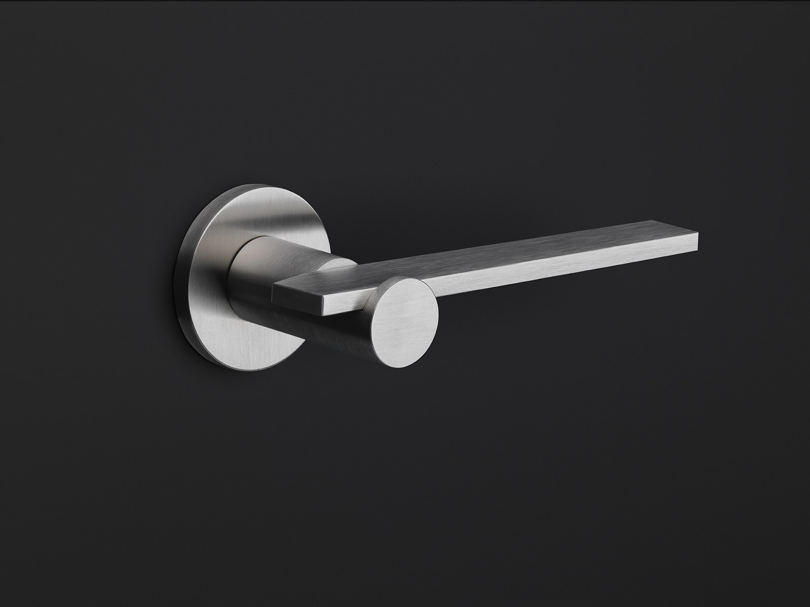

CREATURA
FORMANI
10 / 22
Коллекция

TENSE
by Bertram Beerbaum
Цилиндрическая шейка и прямоугольный рычаг: строгая и выразительная эстетика.
Состав
двери · окна · мебель · аксессуары
Награда
German Design Award, особое упоминание
Отделки
сатин. нерж. сталь, сатин. чёрный, бронза, PVD шампань